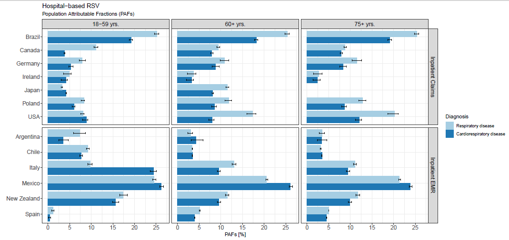
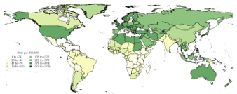

Adapting the GBD's risk-assessment framework to estimate the true burden of viral diseases like influenza, RSV, and dengue.
A newer research area I'm deeply enthusiastic about is estimating the burden of viral diseases. Viruses like influenza, respiratory syncytial virus (RSV), and dengue are among the most prevalent infections affecting human health, yet their true burden is difficult to pin down — symptoms are often mild and non-specific, routine lab testing is limited, and even well-established surveillance systems like the WHO Global Influenza Surveillance and Response System and the PAHO/WHO Regional Dengue Program can't fully capture their population-level toll. The role of viruses in both fatal and non-fatal disease burden is likely underestimated as a result.
To address this, I've adapted the GBD's Comparative Risk Factor Assessment (CRA) framework — normally used to estimate the impact of environmental and occupational exposures — to viral diseases. Population-level viral activity, tracked through active surveillance, is related to outcomes like deaths or hospitalizations through a time-series regression approach, the same research design typically used in environmental exposure studies. The resulting exposure-response relationships are then combined with population attributable fractions to calculate attributable burden, while still capturing the uncertainty introduced by confounding factors like weather, climate, and geography.
In an initial study, I estimated that roughly 300,000 cardiovascular deaths are attributable to influenza annually, published as Global, Regional and National Estimates of Influenza-Attributable Ischemic Heart Disease Mortality in eClinicalMedicine. I applied a similar approach to RSV-attributable hospitalizations among older adults, accounting for influenza and COVID-19 activity, seasonal trends, temperature, and humidity, published as Respiratory Syncytial Virus-Attributable Hospitalizations Among Adults in High- and Middle-Income Countries: Application of the Global Burden of Disease Framework in eClinicalMedicine. A follow-up manuscript extending this to global, 204-country estimates of RSV-attributable respiratory and cardiorespiratory hospitalizations — and highlighting RSV's role in heart health — has been submitted to Lancet Global Health and is available as a preprint.
I'm currently investigating RSV's impact on high-risk populations with preexisting conditions; preliminary findings show striking vulnerability among people with heart failure, asthma, COPD, diabetes, and chronic kidney disease. Beyond the initial $1 million influenza project, I've secured funding for four additional RSV studies, bringing this program's total budget to $3.8 million, and recently secured a further $900,000 to estimate the burden of Clostridioides difficile.
Explore further

Applying the GBD framework to estimate RSV's burden in high- and middle-income countries.

204-country estimates of RSV-attributable respiratory and cardiorespiratory hospitalizations.